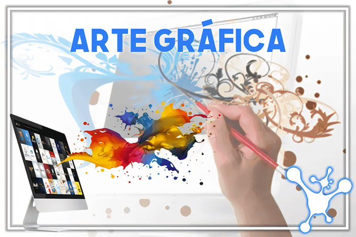

Designer gráfico : tudo sobre a profissão
O profissional da área de Design Gráfico cria projetos de comunicação visual e novos produtos e embalagens, desenha logotipos, formata qualquer tipo de material visual como panfletos, outdoors, páginas da internet, etc.
Algumas das principais atividades desempenhadas por um designer gráfico são:
• Criação e produção de animações para o meio digital.
• Criação de logotipos, marcas e embalagens.
• Definição da aparência e formato de páginas de jornais e revistas (cores, formatos, tamanhos e tipos de letras e de papel).
• Criação visual de sites, blogs, banners para a internet.
• Planejamento e desenvolvimento de anúncios, panfletos, cartazes e vinhetas para a TV.
Ele também pode atuar na área de Design de Produtos, desenhando novos produtos para diversas áreas, levando em conta os aspectos funcionais, estéticos e utilitários do objeto. O designer gráfico pode ainda desenhar móveis, joias, vestuário, equipamentos médicos e odontológicos, peças para maquinário industrial, eletrodomésticos, entre outros.
Módulos:
Photoshop:
Edição de ilustrações, restauração e correção de fotos e figuras, equilíbrio e mudança de cores, remoção e inclusão de objetos em uma imagem, criação de banner, outdoor, panfletos, cartões de visita, logomarcas, etc.
Illustrator:
Ilustrações para artes gráficas, web, dispositivos entre outros.
CorelDRAW:
Tratar, vetorizar e transformar desenhos gráficos, criar objetos, efeitos, textos, tabelas, bitmaps, entre outros.
Publisher:
Diagramação eletrônica, como elaborações de layouts com textos, gráficos, fotografias e outros elementos.
Projeto de conclusão!
